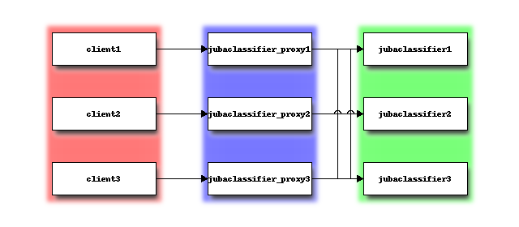

Setup in Distributed Mode¶
In this page, we describe how to setup Jubatus distributed in multiple nodes.
We recommend trying this tutorial after you experience Tutorial in standalone mode.
Distributed Mode¶
You can run Jubatus in a distributed environment using ZooKeeper and Jubatus proxies.

Setup ZooKeeper¶
ZooKeeper is a centralized service for maintaining configuration information, naming, providing distributed synchronization, and providing group services. Jubatus in cluster mode uses ZooKeeper to manage Jubatus servers and proxies in cluster environment.
Run ZooKeeper server like this:
$ /path/to/zookeeper/bin/zkServer.sh start
JMX enabled by default
Using config: /path/to/zookeeper/bin/../conf/zoo.cfg
Starting zookeeper ...
STARTED
Here we assume that ZooKeeper is running on localhost:2181. You can change it in the zoo.cfg file.
Register configuration file to ZooKeeper¶
In distributed environment, register configuration file on the local file system to ZooKeeper using jubaconfig.
$ jubaconfig --cmd write --zookeeper=localhost:2181 --file config.json --name tutorial --type classifier
Jubatus Proxy¶
Jubatus proxies proxy RPC requests from clients to servers. In distributed environment, make RPC requests from clients to proxies, not directly to servers.
Jubatus proxies are provided for each Jubatus servers. For the classifier, jubaclassifier_keeper is the corresponding proxy.
$ jubaclassifier_proxy --zookeeper=localhost:2181 --rpc-port=9198
Now jubaclassifier_proxy started listening on TCP port 9198 for RPC requests.
Join Jubatus Servers to Cluster¶
To start Jubatus servers in cluster mode, give --name and --zookeeper option when executing servers. Server processes started with same name belongs to the same cluster and they collaborate with one another.
If you want to start multiple server processes on the same machine, please note that you must change the port for each processes.
$ jubaclassifier --rpc-port=9180 --name=tutorial --zookeeper=localhost:2181 &
$ jubaclassifier --rpc-port=9181 --name=tutorial --zookeeper=localhost:2181 &
$ jubaclassifier --rpc-port=9182 --name=tutorial --zookeeper=localhost:2181 &
When Jubatus servers are started in cluster mode, they create a node in ZooKeeper system. You can verify that three server processes are registered to ZooKeeper system by using ZooKeeper client.
$ /path/to/zookeeper/bin/zkCli.sh -server localhost:2181
[zk: localhost:2181(CONNECTED) 0] ls /jubatus/actors/classifier/tutorial/nodes
[XXX.XXX.XXX.XXX_9180, XXX.XXX.XXX.XXX__9181, XXX.XXX.XXX.XXX__9182]
Run Tutorial¶
Run the tutorial program again, but this time we use options to specify port to connect to proxies instead of servers. In cluster mode, you also need to specify the cluster name when making RPC request to proxies.
$ python tutorial.py --server_port=9198 --name=tutorial
Note that you can use the same client code for both standalone mode and distributed mode.
Cluster Management in Jubatus¶
Jubatus has a mechanism to centrally manage various processes. In this tutorial, you will execute some processes on each server as shown in the following table.
| IP Address | Processes |
|---|---|
| 192.168.0.1 | Terminal |
| 192.168.0.11 | jubaclassifier - 1 |
| 192.168.0.12 | jubaclassifier - 2 |
| 192.168.0.13 | jubaclassifier - 3 |
| 192.168.0.101 | jubaclassifier_proxy/client - 1 |
| 192.168.0.102 | jubaclassifier_proxy/client - 2 |
| 192.168.0.103 | jubaclassifier_proxy/client - 3 |
| 192.168.0.211 | ZooKeeper - 1 |
| 192.168.0.212 | ZooKeeper - 2 |
| 192.168.0.213 | ZooKeeper - 3 |
For the best practices, see Cluster Administration Guide.

ZooKeepers & Jubatus Proxies¶
Start ZooKeeper servers (make sure you configure an ensemble between them).
[192.168.0.211]$ bin/zkServer.sh start
[192.168.0.212]$ bin/zkServer.sh start
[192.168.0.213]$ bin/zkServer.sh start
Start jubaclassifier_proxy processes. jubaclassifier_proxy uses TCP port 9199 by default.
[192.168.0.101]$ jubaclassifier_proxy --zookeeper 192.168.0.211:2181,192.168.0.212:2181,192.168.0.213:2181
[192.168.0.102]$ jubaclassifier_proxy --zookeeper 192.168.0.211:2181,192.168.0.212:2181,192.168.0.213:2181
[192.168.0.103]$ jubaclassifier_proxy --zookeeper 192.168.0.211:2181,192.168.0.212:2181,192.168.0.213:2181
Jubavisor: Process Management Agent¶
jubavisor is an agent process that manages server processes.
jubavisor can manage each Jubatus server processes by receiving RPC requests from jubactl, a controller command. jubavisor uses TCP port 9198 by default.
[192.168.0.11]$ jubavisor --zookeeper 192.168.0.211:2181,192.168.0.212:2181,192.168.0.213:2181 --daemon
[192.168.0.22]$ jubavisor --zookeeper 192.168.0.211:2181,192.168.0.212:2181,192.168.0.213:2181 --daemon
[192.168.0.33]$ jubavisor --zookeeper 192.168.0.211:2181,192.168.0.212:2181,192.168.0.213:2181 --daemon
Now send commands from jubactl to jubavisor.
[192.168.0.1]$ jubactl -c start --server=jubaclassifier --type=classifier --name=tutorial --zookeeper=192.168.0.211:2181,192.168.0.212:2181,192.168.0.213:2181
[192.168.0.1]$ jubactl -c status --server=jubaclassifier --type=classifier --name=tutorial --zookeeper=192.168.0.211:2181,192.168.0.212:2181,192.168.0.213:2181
active jubaclassifier_proxy members:
192.168.0.101_9199
192.168.0.102_9199
192.168.0.103_9199
active jubavisor members:
192.168.0.11_9198
192.168.0.12_9198
192.168.0.13_9198
active tutorial members:
192.168.0.11_9199
192.168.0.12_9199
192.168.0.13_9199
From members list, you can see the server is running. Now run clients simultaneously, from multiple hosts.
[192.168.0.101]$ python tutorial.py --name=tutorial --server_ip 127.0.0.1:9199
[192.168.0.102]$ python tutorial.py --name=tutorial --server_ip 127.0.0.1:9199
[192.168.0.103]$ python tutorial.py --name=tutorial --server_ip 127.0.0.1:9199
You can also stop instance of Jubatus server from jubactl.
[192.168.0.1]$ jubactl -c stop --server=jubaclassifier --type=classifier --name=tutorial --zookeeper=192.168.0.211:2181,192.168.0.212:2181,192.168.0.213:2181